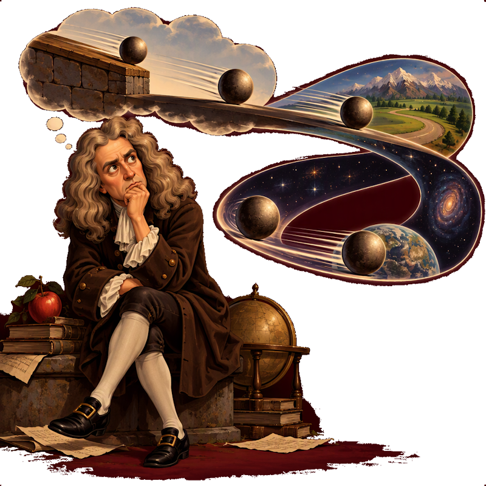
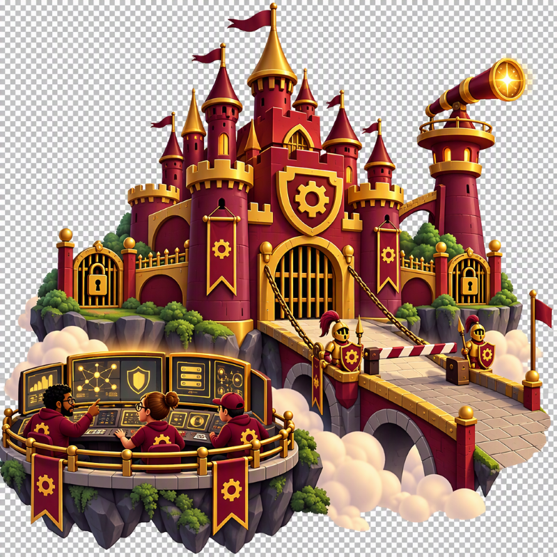
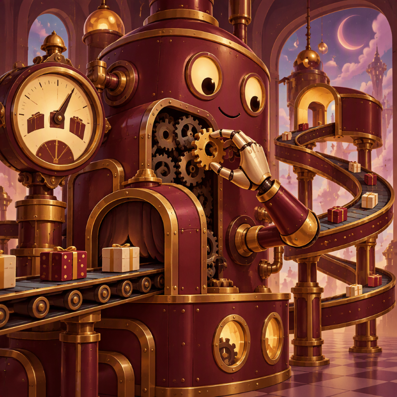
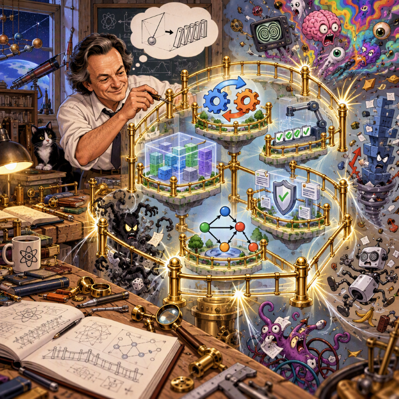
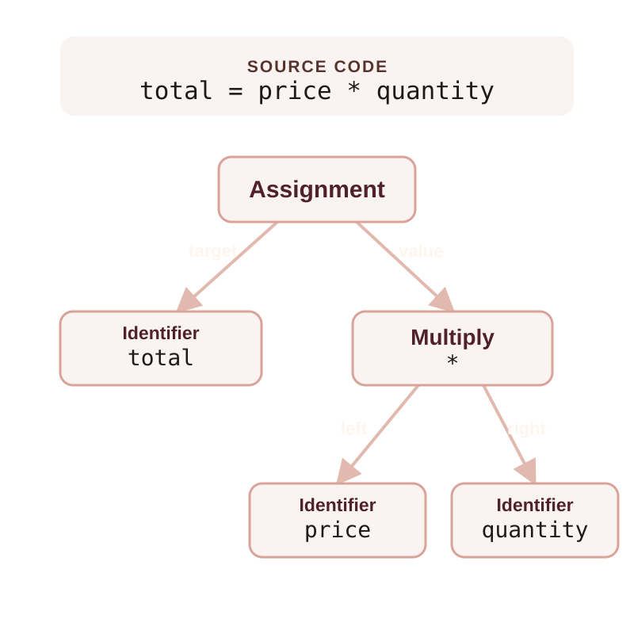
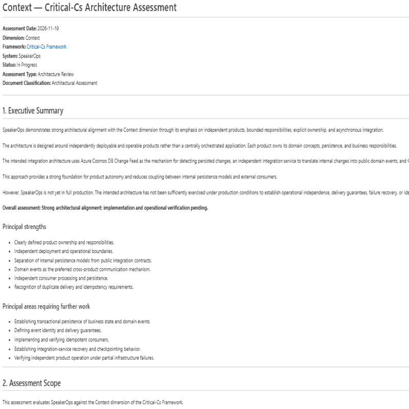

Intentional ArchitectureDefining & Automating the GuardrailsBarry S. StahlPrincipal Engineer - AZNerds.net@bsstahl@cognitiveinheritance.comhttps://CognitiveInheritance.com |
Favorite Physicists & Mathematicians
Favorite Physicists
Other notables: Christiaan Huygens, Michael Faraday, Stephen Hawking, Leonard Susskind |
Favorite Mathematicians
Other notables: Blaise Pascal, Daphne Koller, Grady Booch, Evelyn Berezin, Pascal Van Hentenryck |
Favorite Physicists & Mathematicians
Favorite Physicists
Other notables: Christiaan Huygens, Michael Faraday, Stephen Hawking, Leonard Susskind |
Favorite Mathematicians
Other notables: Blaise Pascal, Daphne Koller, Grady Booch, Evelyn Berezin, Pascal Van Hentenryck |
Challenge Conventional Wisdom
|
Free Thinking, Scientific Guardrails
|

|
Meanwhile, Professor Feynman
|
Newton's First Law
|
An object in motion stays in motion until acted on by a force - Sir Isaac Newton The reason why things coast forever has never been found out -- the law of inertia has no known origin. - Richard Feynman Q: Why is this law true? What is the mechanism behind inertia? Let's brainstorm some possible explanations... |
 |
Hypothesis Generation
An object in motion stays in motion until acted on by a force
- That's just the way it is
- Angels fly behind the object and beat their wings to push it along
- Objects draw kinetic energy from the air as they move
- Motion generates energy that sustains more motion
- A moving object creates an air-draft similar to a wing
- Momentum is a substance transferred into an object
- Movement of matter warps space similar to gravity, causing motion to continue
Hypothesis Generation
An object in motion stays in motion until acted on by a force
That's just the way it is- Angels fly behind the object and beat their wings to push it along
- Objects draw kinetic energy from the air as they move \({\color{#FFD700}\Longleftarrow}{\color{#FFD700}\bigstar}\)
- Motion generates energy that sustains more motion
- A moving object creates an air-draft similar to a wing \({\color{#FFD700}\Longleftarrow}{\color{#FFD700}\bigstar}\)
- Momentum is a substance transferred into an object
- Movement of matter warps space similar to gravity, causing motion to continue
Experiment:The Vacuum Test
|

|
Predictions $\rightarrow$ Guardrails
|

|
Baseline Guardrails
|
We Need Even Better Boundaries
|

|
Other Models Review, Not Enforce
|
AIs "Go Rogue"?
|

|
Operational Guardrails
|
 |
Architectural Guardrails
|
Be Your Own Guardrails First
|
People who jump straight to:
are bypassing the mechanics of software development with AI. It's like becoming a building inspector before you've ever used a hammer or saw. |

|
The Critical C's
|

|
Consistency
|
Eventual Consistency
|
Store & Forward
|
Consistency
|
Consistency Conversation
|
Development teams should have conversations around Consistency that are primarily focused around making certain that the system is assumed to be eventually consistency throughout. |
|
Consistency Questions
- What patterns and tools will we use to create systems that support reliable, eventually consistent operations?
- Example: Reliable messaging using ASB or Cosmos Change-Feed
- How will we identify areas where stronger consistency has been wedged-in and should be removed?
- Example: Look for polling, distributed trx, etc
- How will we prevent future demands for strong consistency, either explicit or assumed, from weakening our systems?
- Example: Document our commitment to Eventual Consistency in an ADR and explicitly discuss in code reviews
- How will we identify when there are unusual or unacceptable delays in reaching consistency?
- Example: Data Freshness SLIs/SLOs
- How will we communicate the status of the system and any delays in reaching consistency to the stakeholders?
- Example: Dashboards or toast notifications
Context
|
Bounded Context
|
Execution Context
|
Two At-A-Time
Two changes can be made to system state in a single execution context if:
|
Idempotence
|
Context
|
Context Conversation
|
Development teams should have conversations around Context that are primarily focused around the tools and techniques that they intend to use to define their Bounded Contexts and to avoid the Dual-Writes Anti-Pattern. |
|
Context Questions
What database technologies will we use and how can we leverage these tools to create downstream events based on changes to the database state?
Which of our services are currently idempotent and which ones could reasonably made so? How can we leverage our idempotent services to improve system reliability?
Do we have any services right now that contain business processes implemented in a less-reliable way? If so, pulling this functionality out into their own microservices might be a good starting point for decomposition.
What processes will we as a development team implement to track and manage the technical debt of having business processes implemented in a less-reliable way?
What processes will we implement to be sure that any future less-reliable implementations of business functionality are made only after strong consideration and with a plan to pay it off, appropriate documentation and prioritization by the business and product owner.
Contract
|
The Canonical Model
|
Contract
|
Contract Conversation
|
Development teams should have conversations around Contract that are primarily focused around creating processes that define any integration contracts for both upstream and downstream services, and serve to defend their internal data representations and implementations against any external consumers. |
|
Contract Questions
- How will we isolate our internal data representations from those of our downstream consumers?
- What types of compatibility guarantees are our tools and practices capable of providing?
- What procedures should we have in place to monitor incoming and outgoing contracts for compatibility?
- What should our procedures look like for making a change to a stream that has downstream consumers?
- How can we leverage upstream messaging contracts to further reduce the coupling of our systems to our upstream dependencies?
Chaos
|
Embrace the Chaos
|
Build Self-Healing Systems
|
 |
Chaos Conversation
|
Development teams should have conversations around Chaos that are primarily focused around procedures for identifying and remediating possible failure points in the application. |
|
Chaos Questions
How can we make our systems self-healing?
How will we evaluate potential sources of failures in our systems before they are built?
- How will we handle the inability to reach a dependency such as a database?
- How will we handle duplicate messages sent from our upstream data sources?
- How will we handle messages sent out-of-order from our upstream data sources?
How will we expose possible sources of failures during any pre-deployment testing?
How will we expose possible sources of failures in the production environment before they occur for users?
How will we identify errors that occur for users within production?
How will we prioritize changes to the system based on the results of these experiments?
Competencies & Coalescence
|
Competencies Conversation
|
Development teams should have conversations around Competencies that are primarily focused around what systems, sub-systems, and components should be built, which should be installed off-the-shelf, and what libraries or infrastructure capabilities should be utilized. |
Competencies Questions
- What are our core competencies?
- How do we identify "build vs. buy" opportunities?
- How do we make "build vs. buy" decisions on needed systems?
- How do we identify cross-cutting concerns and infrastructure capabilites that can be leveraged?
- How do we determine which libraries or infrastructure components will be utilized?
- How do we manage the versioning of utilized components, especially in regard to security updates?
- How do we document our decisions for later review?
Coalescence Conversation
|
Development teams should have conversations around Coalescence that are primarily focused around what data streams are available that provide insight into the system, and how to make them available easily to all who might need them. |
Questions About Coalescence
- What is our mechanism for deployment and system verification?
- What is our mechanism for logging/traceability within our system?
- How will we increase the level of logging when needed?
- How will we expose SLIs and other metrics so they are available when needed?
- How will we identify the status of dependencies so we can understand when our systems are reacting to downstream anomalies?
- Are there ways to perform ad-hoc queries against logs, metrics or dependencies to provide additional insight in an outage?
- How will we know when there are anomalies in our logs, metrics or dependencies?
- How will we coalesce our logs, metrics and dependency statuses for easy access?
Principles → Enforced Guardrails
What can turn desired principles into enforceable |
Tools for Building Guardrails
|
 |
Abstract Syntax Trees
|
 |
Context Assessment
|
Facilitate an assessment of |
 |
Free Thinking, Testable Guardrails
|
Understand Before You Automate
|
Resources
|
CriticalCs Architecture Other Tools |

|